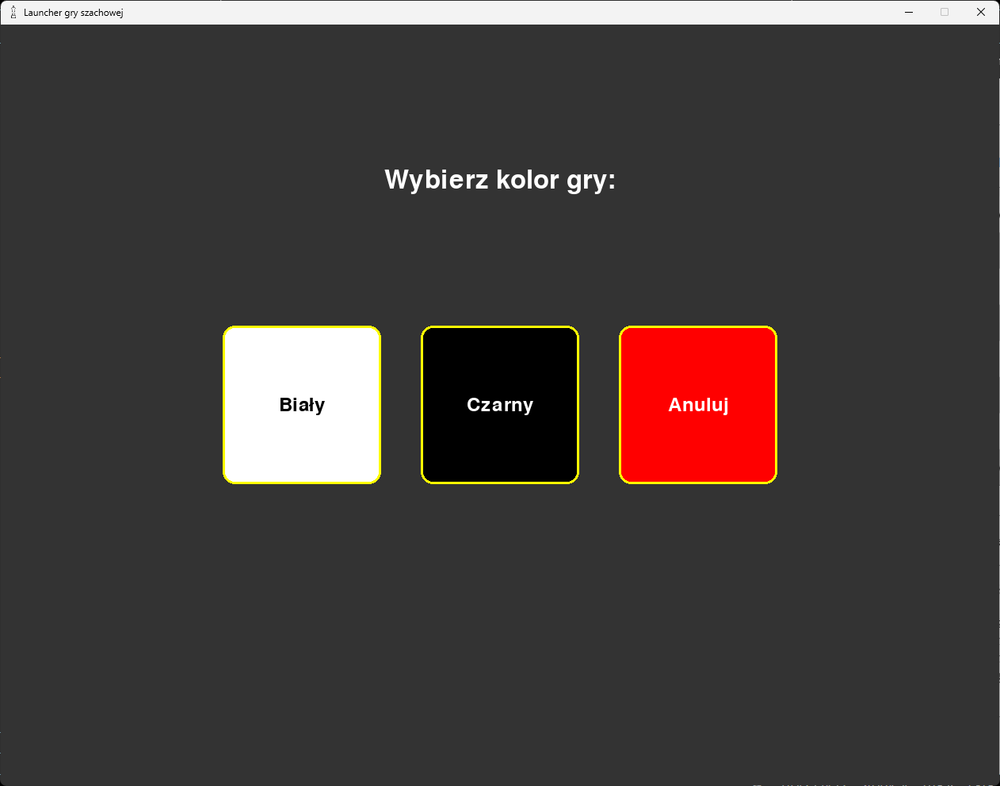
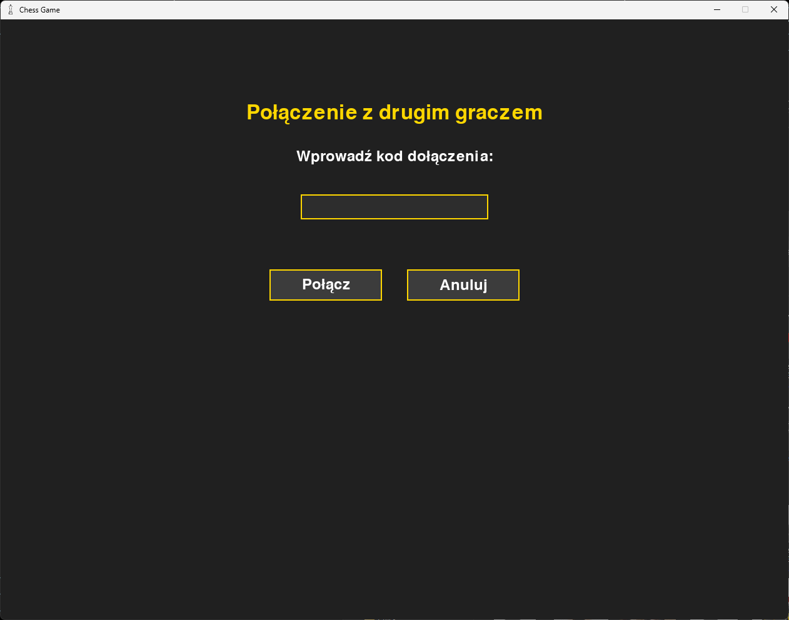
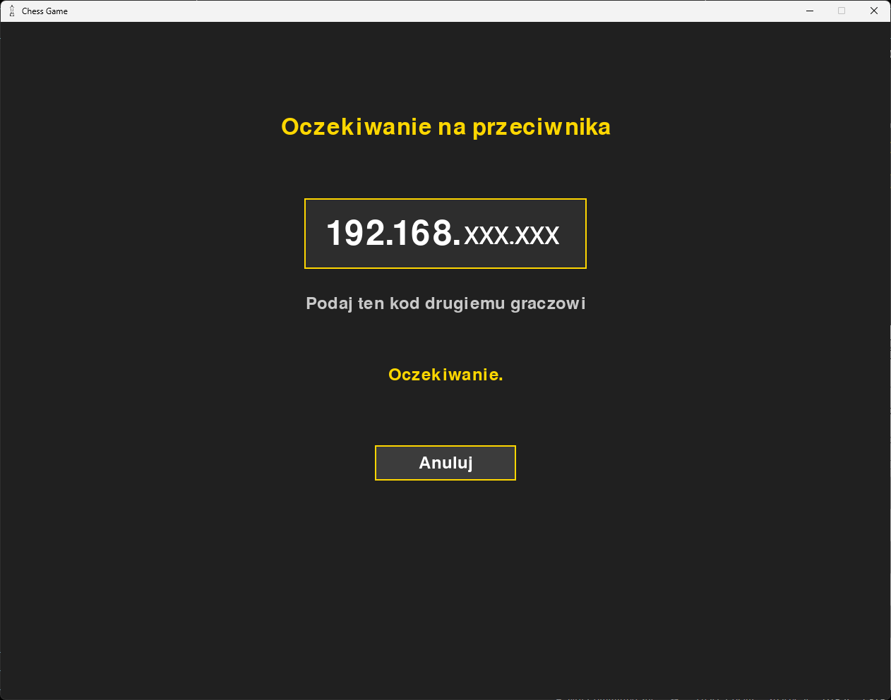
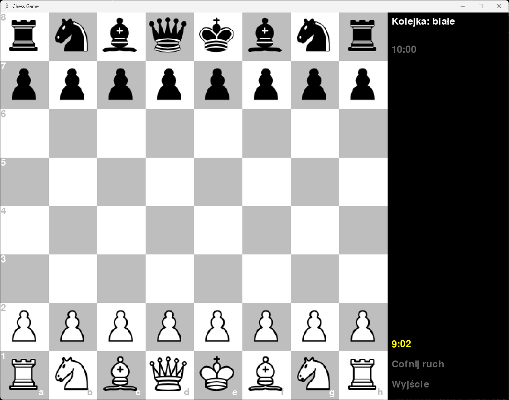

Po wybraniu tej opcji najpierw ukaże się nam ekran wyboru koloru naszych figur:
Znajduje się tam także przycisk pozwalający na anulowanie partii i powrót do ekranu głównego.
 Gracze, aby grać ze sobą muszą wpierw wybrać przeciwne kolory figur.
Gracze, aby grać ze sobą muszą wpierw wybrać przeciwne kolory figur.
Jeżeli wybierzemy kolor Biały, zobaczymy taki ekran:
Znajdujący się tam przycisk Anuluj przeniesie nas z powrotem do ekranu głównego.
 Gracz, który wybierze kolor czarny wpierw ustala czas gry.
Gracz, który wybierze kolor czarny wpierw ustala czas gry.
Następnie zobaczy on taki ekran (kod może być inny niż ten poniżej):
W tym momencie ten gracz powinien podać kod gry drugiemu graczowi.
Rozgrywka zacznie się po tym, gdy drugi gracz wpisze kod i zatwierdzi go klawiszem Enter

Po prawej stronie możemy zobaczyć:
- Kolor gracza, do którego należy kolej.
- Czas gracza grającego figurami czarnymi.
- Czas gracza grającego figurami białymi.
- Przycisk do cofnięcia ostatniego ruchu. Więcej o cofaniu ruchów
- Przycisk do wyjścia z obecnej gry.
Przydatne strony:
Jak poruszać figurami?Widok dla nerdów